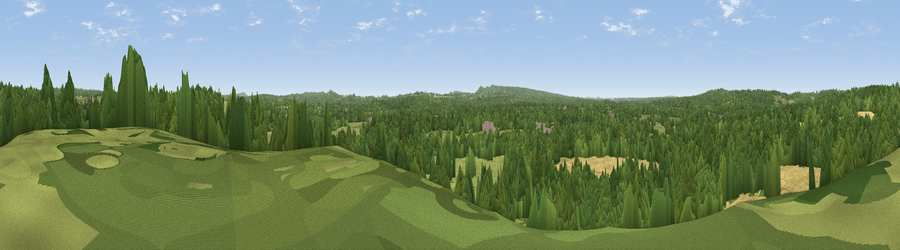

Viewpoint near Shackleford
#37616 in England · top 39% of its area beats it · near ShacklefordWhere it is
The exact computed spot (SU 92525 44375). Click the marker for map links.
The view, rendered

A 360° render of this exact spot computed from the terrain model, tree cover and land cover — summer colours, afternoon light, calibrated against photographs of famous viewpoints. Real trees, hedges and buildings will differ in detail.
The panorama
Grey silhouette: terrain skyline in each direction (720 bearings, Earth curvature and refraction included). Dashed green: skyline with trees (+15 m) and buildings (+8 m) as obstacles. Blue strip: how far the ground is visible on each bearing.
Where the view opens
Wedge length = distance to the farthest visible ground on that bearing (vegetation-aware). Rings at 10, 25 and 50 km.
What fills the view
50% woodland · 28% grassland · 21% cropland ·
Angular shares of the visible panorama (visual magnitude), not map area. Landscape diversity 0.47 (0–1 Shannon).
Key numbers
More beautiful places nearby
The staircase of upgrades: each row has a higher view potential than everything closer. Driving times are estimates from straight-line distance, calibrated against real road routing — check an actual route before setting out.
| Place | Direction | Drive | Score |
|---|---|---|---|
| Viewpoint near Puttenham | N · 4 km | ~9 min | 43.1 |
| Viewpoint near Puttenham | NNW · 4 km | ~9 min | 46.3 |
| Viewpoint near Wanborough | NNE · 4 km | ~10 min | 48.1 |
| Viewpoint near Compton | NE · 5 km | ~12 min | 49.4 |
| Viewpoint near Hambledon | SE · 7 km | ~15 min | 57.7 |
| Viewpoint near Hascombe | SE · 8 km | ~17 min | 62.0 |
| Temple of the Four Winds | SSW · 9 km | ~17 min | 65.4 |
| Viewpoint near Fernhurst | S · 15 km | ~27 min | 75.1 |
51.19112, -0.67736 · source: screening · position refined by local search. Computed location — check access rights before visiting.